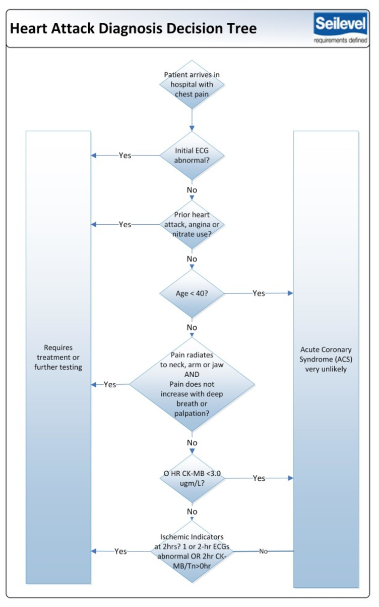
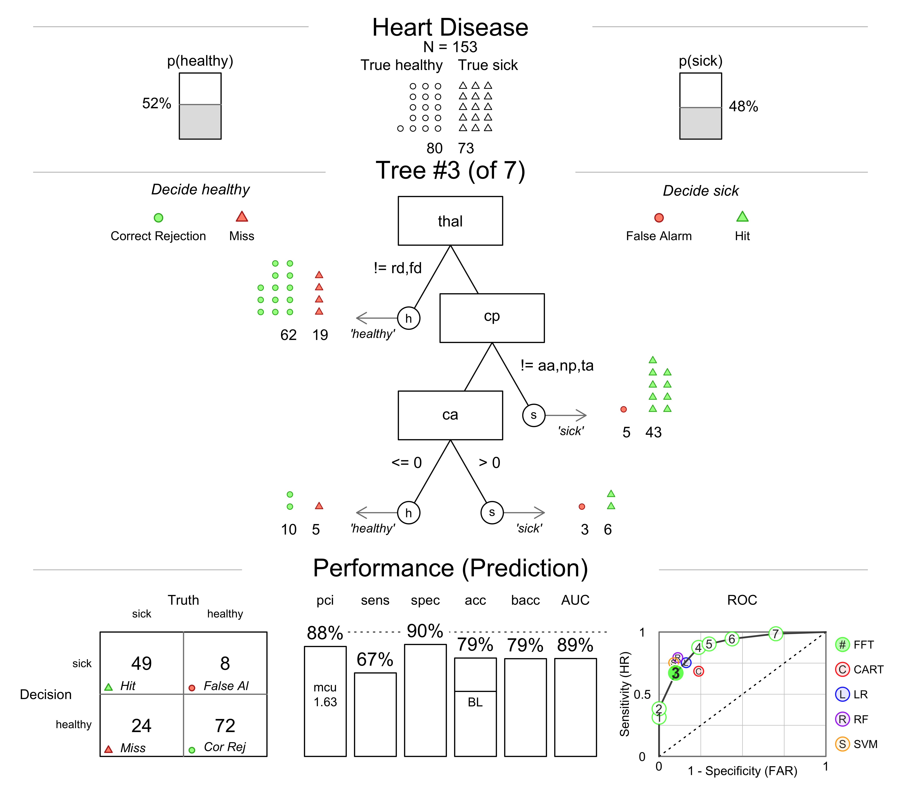
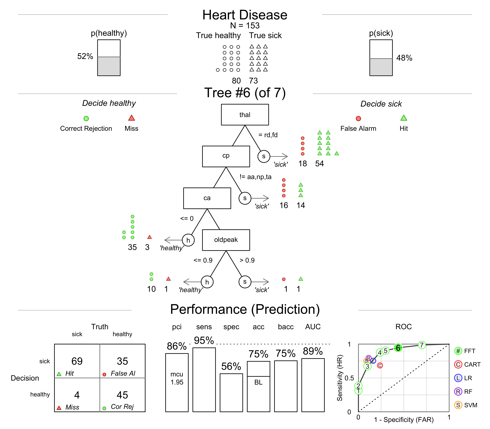
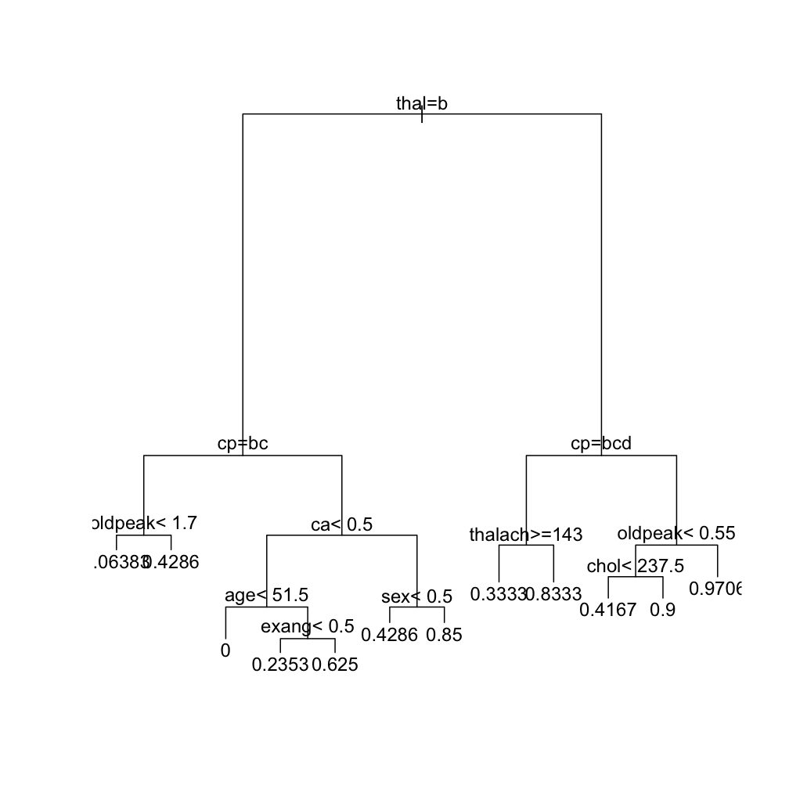
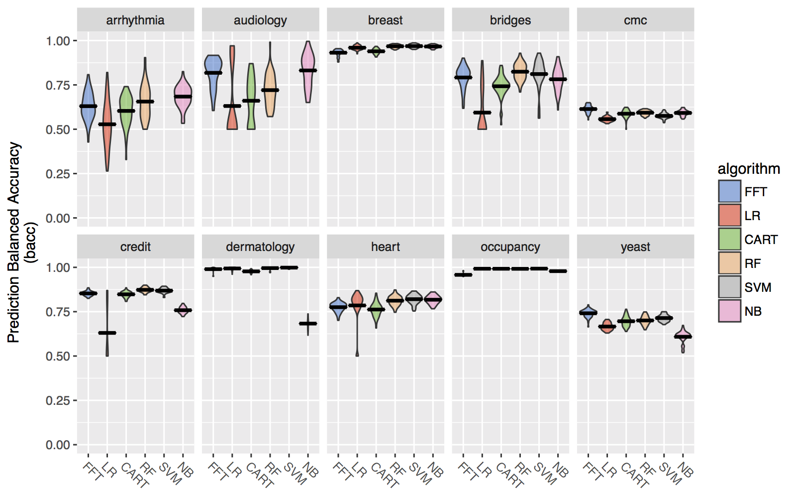

FFTrees
An R package to create, visualize, and implement fast and frugal decision trees
Nathaniel Phillips, Economic Psychology, University of Basel
BaselR Meeting, March 2017, ndphillips.github.io/RBasel
A growing problem at the Cook County Hospital in 1996

Patient overload

Diagnosing heart attacks
- 30 people a day worried about a heart attack.
- Coronary care bed costs $2,000 a night and requires a 3 day stay.
- Send true heart attacks to the coronary care bed, and true healthy patients to a normal bed.
Multiple, uncertain measures
- Electrocardiogram (ECG), Blood pressure, Stethescope, How long? How much? During exercise? History? Cholesterol? Drugs? etc.
How good were doctor's intuitive decisions?
- Task: Estimate from 0 to 100 the probability of a heart attack of 20 separate patients.

Answer: Not consistent
"In each case the answers we got pretty much ranged from 0 to 100. It was extraordinary" (Brenden Reilly, Department of Medicine chairman)

Solution
- A fast and frugal decision tree (FFT) developed by a cardiologist named Lee Goldman.

Why use a decision tree?
- Speed, Consistency, Easy to understand and use 'in the head'
The Cook hospital decision tree
- Over two years, the performance of the tree was compared to the physician's intuitive judgments.
Results
- Doctor's accuracy: 75-90%
- Decision tree accuracy: 95%
- Tree had far fewer false-positives and huge cost savings
- To this day, the tree is still used at the hospital.
Standard decision tree
Standard decision trees created by unrestricted algorithms can become very complex
Complexity -> High costs, Difficult to understand, prone to overfitting.

Fast and Frugal tree
A fast and frugal decision tree (FFT) is a very simple, highly restricted decision tree where each node has exactly two branches, where at least one branch is an exit branch (Martignon et al., 2008).
FFTs -> Cheap, easy to understand, and rarely overfit.

Problem
- There is no off-the-shelf method to construct FFTs.
- Previous researchers have individually constructed their FFTs.
Task
- Create an easy-to-use R package that constructs, visualizes, and implements FFTs.

FFTrees
# v1.1.8 available on CRAN
install.packages("FFTrees")
# v1.2.0 on github
devtools::github("ndphillips/FFTrees", include_vignette = TRUE)
Heart disease datatset
library(FFTrees)
head(heartdisease)
## age sex cp trestbps chol fbs restecg thalach exang oldpeak slope ca
## 1 63 1 ta 145 233 1 hypertrophy 150 0 2.3 down 0
## 2 67 1 a 160 286 0 hypertrophy 108 1 1.5 flat 3
## 3 67 1 a 120 229 0 hypertrophy 129 1 2.6 flat 2
## 4 37 1 np 130 250 0 normal 187 0 3.5 down 0
## 5 41 0 aa 130 204 0 hypertrophy 172 0 1.4 up 0
## 6 56 1 aa 120 236 0 normal 178 0 0.8 up 0
## thal diagnosis
## 1 fd 0
## 2 normal 1
## 3 rd 1
## 4 normal 0
## 5 normal 0
## 6 normal 0
Creating a Heart Disease FFT
# Step 1: Create training and test data
set.seed(100)
heartdisease <- heartdisease[sample(nrow(heartdisease)),]
heart.train <- heartdisease[1:150,]
heart.test <- heartdisease[151:303,]
# Step 2: Create heart.fft
heart.fft <- FFTrees(formula = diagnosis ~.,
data = heart.train,
data.test = heart.test)
FFT summary statistics
# Step 3: Summary statistics
heart.fft
## [1] "7 FFTs using up to 4 of 13 cues"
## [1] "FFT #4 uses 3 cues {thal,cp,ca} with the following performance:"
## train test
## n 150.00 153.00
## pci 0.88 0.88
## mcu 1.74 1.73
## acc 0.80 0.82
## bacc 0.80 0.82
## sens 0.82 0.88
## spec 0.79 0.76
Heart Disease FFT

3 cues
| cue | description | values |
|---|---|---|
thal |
thallium scintigraphy, a nuclear imaging test that shows how well blood flows into the heart. | normal (n), indicate a fixed defect (fd), or a reversible defect (rd) |
cp |
Chest pain type | Typical angina (ta), atypical angina (aa), non-anginal pain (np), or asymptomatic (a) |
ca |
Number of major vessels colored by flourosopy, a continuous x-ray imaging tool | 0, 1, 2 or 3 |
Heart Disease FFT | Training

Heart Disease FFT | Prediction

Heart Disease FFT | ROC

Heart Disease FFT | Tree 4

Heart Disease FFT | Tree 3

Heart Disease FFT | Tree 6

Heart disease cue accuracies
plot(heart.fft, what = "cues", main = "Heart Disease")

FFForest()
Visualise cue importance and co-occurence

Comparing FFTs to standard trees
How does the FFT created by FFTrees compare to a 'standard' decision tree created by rpart?
Heart disease: rpart
- 8 cues (thal, cp, oldpeak, ca, age, exang, thalach, chol)

Heart disease: FFT
- 3 cues (thal, cp, ca)
- The FFT is very cheap to implement
- Heart disease FFT: $75.91
- Regression: $300
Heart disease classification accuracy

Heart disease classification accuracy

Heart disease classification accuracy

How accurate are FFTs built by FFTrees?
- Prediction competition
- 10 datasets taken from the UCI machine learning database
- 50% Fitting / 50% Prediction subsample splitting, DV: balanced accuracy = (sensitivity + specificity) / 2
| dataset | cases | cues | base.rate |
|---|---|---|---|
| arrhythmia | 68 | 280 | 0.29 |
| audiology | 226 | 70 | 0.10 |
| breast | 683 | 10 | 0.35 |
| bridges | 92 | 10 | 0.39 |
| cmc | 1473 | 10 | 0.35 |
Table: 5 of the 10 prediction datasets
Aggregate simulation prediction results

Aggregate simulation prediction results

Aggregate simulation prediction results

Simulation prediction results by dataset

Conclusions
- FFTrees makes it easy to develop simple, effective, transparent decision trees.
- FFTrees can compete with complex decision algorithms, even Random Forests and Support Vector machines, in pure prediction.
Next steps
- Speed up code with c++ or Julia.
- Include cue costs into algorithm.
- Quantify when and how a tree fails when it is applied to data over time.

Please help and contribute!
I want more real-world tests of
FFTrees! If you have data you want to tryFFTreeson, or can think of new features, please let me know and I would be happy to collaborate.I am very happy for contributions and bug reports at
github.com/ndphillips/FFTrees,

Questions?

FFTrees algorithm
Calculate a decision threshold
tfor each cue that maximizes the cue’s balanced accuracybaccin training.Rank cues in order of their maximum balanced accuracy -- select the top N cues.
Creates all possible
2^{N−1}trees with these cues, using all exit structures.